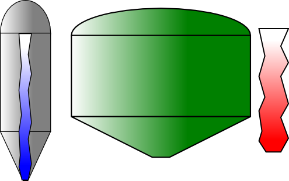

MBLogic
for an open world in automation
MBLogic
for an open world in automation
Column Level Output Objects
Column level outputs use the position of a sharp contrast between two colours to indicate a relative value. These consist of column gauges (intended as display instruments) and tanks (intended to represent process tanks or hoppers). Column gauges and tanks function in identical ways, and only differ in their physical appearance.
Column level output objects manipulate the values in a colour gradient. The transition between the middle two gradient "stops" is abrupt (the stops are set to the same value), so the transition is a sharp line instead of a gradual shading of one colour into another. In their default state they show a gradual shading (a "misty" appearance), but when activated by the correct library function the line becomes sharp.
Column Gauges
Column gauges consist of a gauge background which is simply a passive background object, plus a column indicator with a colour transition line which moves vertically indicate a relative value.
- Drag a column gauge background onto the screen.
- Drag a column indicator onto the screen and position it on top of the gauge background.
- Select the indicator object.
- Right click and select "object properties".
- Set the "id" to the desired name. Be sure to record this name as you will need it later.
You do not need to set the "id" properties of the gauge background, just that of the indicator column.
Tanks
Tanks consist of a tank background which is simply a passive background object, plus a tank fill indicator with a colour transition line which moves vertically indicate a relative value.
- Drag a tank background onto the screen.
- Drag a tank fill indicator onto the screen and position it on top of the tank background.
- Select the indicator object.
- Right click and select "object properties".
- Set the "id" to the desired name. Be sure to record this name as you will need it later.
You do not need to set the "id" properties of the tank background, just that of the indicator column.
